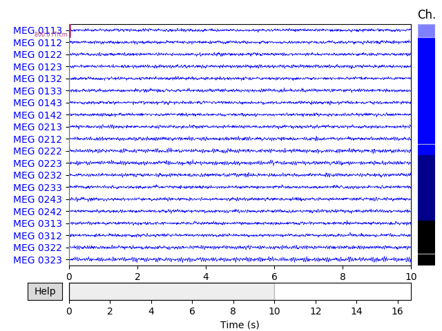

Note
Click here to download the full example code
Generate simulated source data¶
This example illustrates how to use the mne.simulation.SourceSimulator
class to generate source estimates and raw data. It is meant to be a brief
introduction and only highlights the simplest use case.
- 

Out:
Read a total of 4 projection items:
PCA-v1 (1 x 102) active
PCA-v2 (1 x 102) active
PCA-v3 (1 x 102) active
Average EEG reference (1 x 60) active
Reading forward solution from /home/circleci/mne_data/MNE-sample-data/MEG/sample/sample_audvis-meg-eeg-oct-6-fwd.fif...
Reading a source space...
Computing patch statistics...
Patch information added...
Distance information added...
[done]
Reading a source space...
Computing patch statistics...
Patch information added...
Distance information added...
[done]
2 source spaces read
Desired named matrix (kind = 3523) not available
Read MEG forward solution (7498 sources, 306 channels, free orientations)
Desired named matrix (kind = 3523) not available
Read EEG forward solution (7498 sources, 60 channels, free orientations)
MEG and EEG forward solutions combined
Source spaces transformed to the forward solution coordinate frame
Reading labels from parcellation...
read 1 labels from /home/circleci/mne_data/MNE-sample-data/subjects/sample/label/lh.aparc.annot
read 0 labels from /home/circleci/mne_data/MNE-sample-data/subjects/sample/label/rh.aparc.annot
Setting up raw simulation: 1 position, "cos2" interpolation
Event information stored on channel: STI 014
Setting up forward solutions
Computing gain matrix for transform #1/1
Simulating data for forward operator 1/0
Interval 0.000-1.665 sec
Interval 1.665-3.330 sec
Interval 3.330-4.995 sec
Interval 4.995-6.660 sec
Interval 6.660-8.325 sec
Interval 8.325-9.990 sec
Interval 9.990-11.655 sec
Interval 11.655-13.320 sec
Interval 13.320-14.985 sec
Interval 14.985-16.650 sec
10 STC iterations provided
Done
Adding noise to 366/376 channels (366 channels in cov)
50 events found
Event IDs: [1]
50 matching events found
Applying baseline correction (mode: mean)
Not setting metadata
Created an SSP operator (subspace dimension = 4)
4 projection items activated
# Author: Kostiantyn Maksymenko <kostiantyn.maksymenko@gmail.com>
# Samuel Deslauriers-Gauthier <sam.deslauriers@gmail.com>
#
# License: BSD (3-clause)
import os.path as op
import numpy as np
import mne
from mne.datasets import sample
print(__doc__)
# For this example, we will be using the information of the sample subject.
# This will download the data if it not already on your machine. We also set
# the subjects directory so we don't need to give it to functions.
data_path = sample.data_path()
subjects_dir = op.join(data_path, 'subjects')
subject = 'sample'
# First, we get an info structure from the test subject.
evoked_fname = op.join(data_path, 'MEG', subject, 'sample_audvis-ave.fif')
info = mne.io.read_info(evoked_fname)
tstep = 1. / info['sfreq']
# To simulate sources, we also need a source space. It can be obtained from the
# forward solution of the sample subject.
fwd_fname = op.join(data_path, 'MEG', subject,
'sample_audvis-meg-eeg-oct-6-fwd.fif')
fwd = mne.read_forward_solution(fwd_fname)
src = fwd['src']
# To select a region to activate, we use the caudal middle frontal to grow
# a region of interest.
selected_label = mne.read_labels_from_annot(
subject, regexp='caudalmiddlefrontal-lh', subjects_dir=subjects_dir)[0]
location = 'center' # Use the center of the region as a seed.
extent = 10. # Extent in mm of the region.
label = mne.label.select_sources(
subject, selected_label, location=location, extent=extent,
subjects_dir=subjects_dir)
# Define the time course of the activity for each source of the region to
# activate. Here we use a sine wave at 18 Hz with a peak amplitude
# of 10 nAm.
source_time_series = np.sin(2. * np.pi * 18. * np.arange(100) * tstep) * 10e-9
# Define when the activity occurs using events. The first column is the sample
# of the event, the second is not used, and the third is the event id. Here the
# events occur every 200 samples.
n_events = 50
events = np.zeros((n_events, 3))
events[:, 0] = 100 + 200 * np.arange(n_events) # Events sample.
events[:, 2] = 1 # All events have the sample id.
# Create simulated source activity. Here we use a SourceSimulator whose
# add_data method is key. It specified where (label), what
# (source_time_series), and when (events) an event type will occur.
source_simulator = mne.simulation.SourceSimulator(src, tstep=tstep)
source_simulator.add_data(label, source_time_series, events)
# Project the source time series to sensor space and add some noise. The source
# simulator can be given directly to the simulate_raw function.
raw = mne.simulation.simulate_raw(info, source_simulator, forward=fwd)
cov = mne.make_ad_hoc_cov(raw.info)
mne.simulation.add_noise(raw, cov, iir_filter=[0.2, -0.2, 0.04])
raw.plot()
# Plot evoked data to get another view of the simulated raw data.
events = mne.find_events(raw)
epochs = mne.Epochs(raw, events, 1, tmin=-0.05, tmax=0.2)
evoked = epochs.average()
evoked.plot()
Total running time of the script: ( 0 minutes 3.540 seconds)
Estimated memory usage: 8 MB